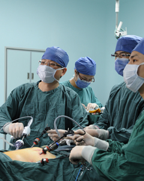

最新文章
- 2017年9月10日，教师节快乐!（黄
- 胃外科成功举办“第九届胃癌外科
- 2017年8月25日，《完全腹腔镜胃癌
- 2017年9月10日，黄昌明教授团队受
- 2017年9月09日，黄昌明教授团队受
- 2017年9月01日，黄昌明教授团队受
热门阅读
推荐阅读

新闻动态
-
胃外科成功举办“第九届胃癌外科规范化治疗高峰论坛” [09/14 13:28]
详情 -
2017年9月10日，教师节快乐!（黄家军教师节献礼） [09/14 13:30]
详情 -
2017年8月25日，《完全腹腔镜胃癌根治术专家共识及手术操作指南（2017版）》第二次讨论会在福州举行[09/14 13:28]
详情 -
2017年9月10日，黄昌明教授团队受邀赴中南大学湘雅二院行手术演示 [09/14 13:28]
详情 -
2017年9月09日，黄昌明教授团队受邀赴大理大学附属第一医院行手术演示[09/14 13:28]
详情 -
2017年9月01日，黄昌明教授团队受邀赴河南省肿瘤医院行手术演示[09/14 13:28]
详情 -
2017年8月27日，黄昌明教授团队受邀赴温州医科大学附属第一医院行手术演示[09/14 13:28]
详情 -
2017年8月26日，第九届胃癌外科规范化治疗高峰论坛圆满落下帷幕[09/14 13:28]
详情 -
2017年8月25日，CLASS-04第三次研究者会议顺利召开，入组工作即将圆满结束[09/14 13:28]
详情 -
2017年8月20日，黄昌明教授团队赴嘉兴市一医院行手术演示[09/14 13:28]
详情